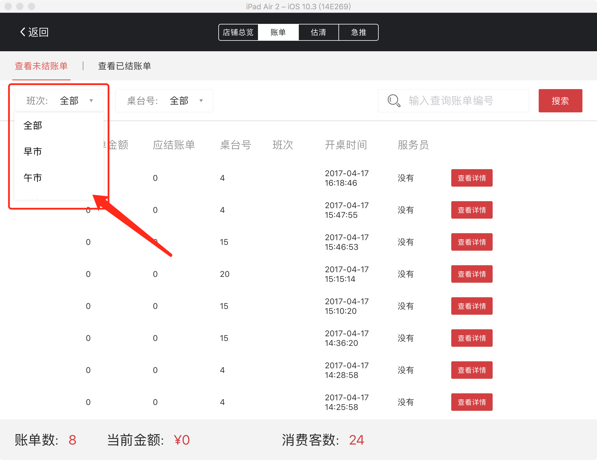
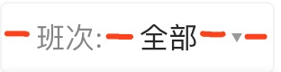
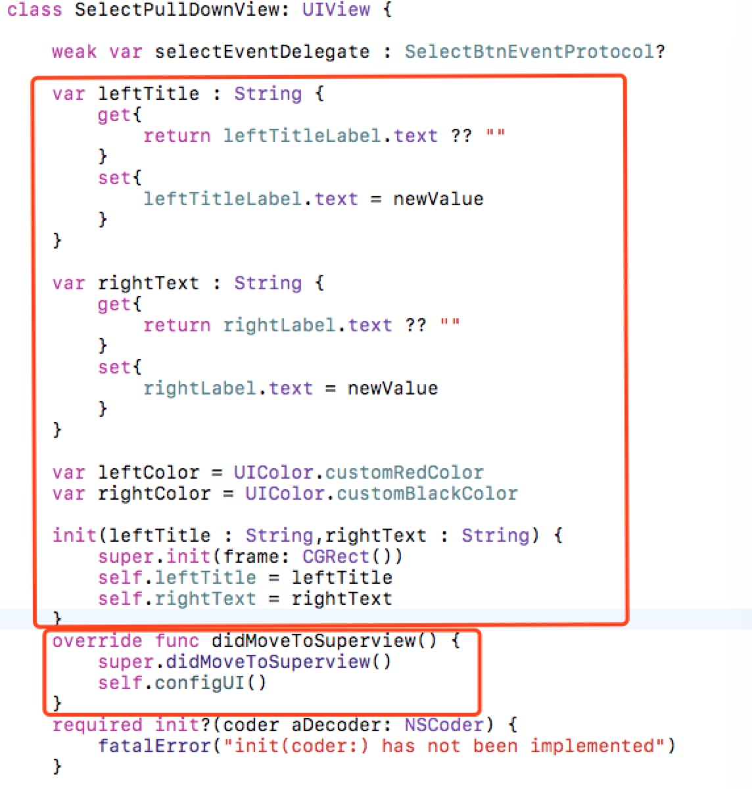
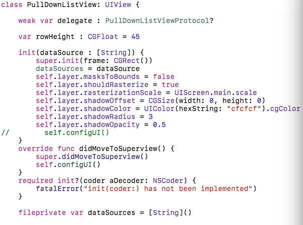
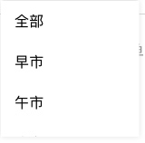
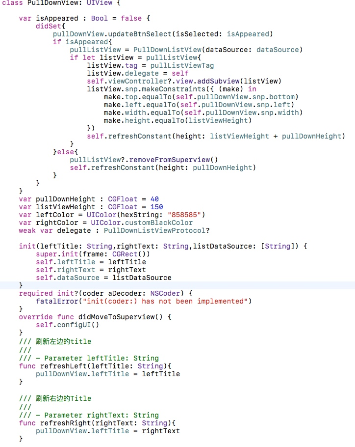
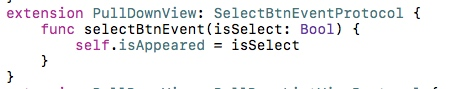
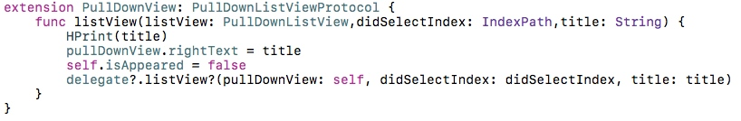

按钮加下拉弹框控件的封装
直接上图

由于项目里用到好多这种点击上面的按钮,下拉出一个tableView弹框的需求,所以我决定单独封装一个.
需求和思路
- 需求:点击上面的按钮,弹出一个下拉框,点击下拉框中的cell,tableView消失,按钮刷新为选中的cell.
- 思路:因为有些地方用上面的按钮控件,有些地方只用下面的控件,有些地方又两个要在一起用,所以我决定封装两个简单的View控件,在单独封装一个View,将两个控件做到一起.
Go!
- 封装按钮控件

既然是封装,那么这个按钮的宽度就一定不能是死的,所以我决定只设置红色位置的layout,整体控件的宽度由"班次""全部"两个Label和图片撑开,传入的String多宽控件就多宽.
UI的问题解决了,剩下的就是如何初始化和配置还有时间传递的问题了,首先要使用这个控件就必须有两个参数,就是两个String,所以我在初始化方法中添加两个参数,而例如两个Label的颜色这种数据作为public属性,可配置.当然还需要两个get set方法的属性,用于初始化控件后,改变控件上的文字,so,控件的初始化方法和暴露的属性是这个样子的:

图中代码上面的初始化的方法和属性,两个Public属性的get和set方法是用于读和设置label的,之所以这么做是因为我觉得分装的控件不应该暴露出UIlabel这种东西(个人想法)所以我用了这种方法对label做了一层处理而真正的label是private的.还有一点要说的是第二个框的代码,我构建UI的位置是在viewdidMovetoSuperView中的时候,是因为放在初始化中会导致设置的字体颜色无效,因为给label设置颜色的位置在configUI方法中.在初始化中调用会导致先调用了configUI,然后才给left or right Color 赋值.点击的事件我选择用代理方法,参数是btn选中的状态ture or false.
2. 封装下拉控件

下拉控件中,我是暴露了一个属性,就是tableView每一个行的高度,初始化中,必须传入tableView的数据.并设置了tableView的阴影,因为项目里的这个控件都需要有阴影,如果其他项目不需要其实可以暴露一个bool属性,控制一下阴影效果.

- 将两个控件封装成一个控件 
这是我封装的新控件的所有暴露的方法,我会一个个的解释这个写的目的,首先第一个属性,isAppeared属性,在每次set之后都会判断它的值,如果是true就创建下拉tableView的控件,如果是false就删除.现在didset中的目的就是配合第一个按钮的控件

这是按钮控件的代理方法的实现,在这个代理方法中,我只需要改变一下isAppear的值就可以控制显示隐藏,而isAppear的值就是按钮控件通过代理方法传给我的值,可能有朋友会觉得那把isAppeard里的代码放到按钮控件的代理方法不也一样么,这个地方我的想法是下拉控件的显示和隐藏不应该是有控件的内部可以控制,如果我点出了拉下控件,用户点击别的位置,按照用户习惯,这个弹框应该收起,所以我才写了isAppeared这个属性,这样以来,外部和内部都可以控制下拉控件的显示和隐藏.
剩下的pullDownHeight和listViewHeight属性是用来控制整个控件的高度和下拉控件的高度的,至于为什么没有暴露出设置宽度的属性,是因为我觉觉得这个控件既然是两个控件的融合,那么下拉框的宽度因为和按钮控件保持一致,而按钮控件的宽度又是由里面的title决定的,所以我没有暴露出宽度的属性.

最后实现拉下控件的代理方法,根据用户点击的cell改变按钮控件的rightLabel的text,当然也是通过修改按钮控件暴露的rightText属性的set方法,而不是直接修改Label的方式.个人认为比较优雅一下,直接改label感觉很暴力.最后在将点击的时间传在control层,分别将点击的index和title传出,方便使用者根据用户的点击做出响应.
总结
其实这个控件的分装没有太大的难度,我自己觉得通过这次封装,一是将两个控件封装到一起,并且其中任何一个控件又都可以单独拿出来用的这种封装方式有了一定的认识,二是如何封装出优雅的可用的控件,不该暴露的属性就不要多暴露,让使用者一目了然,初始化的方法参数能少则少,参数越多,使用难度越大,一起不必要的参数都设置为有默认值可配置的形式.
代码我会在稍后传到我的github
传送门